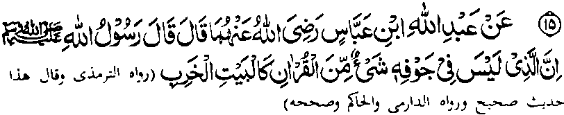

Miyakathitayan ko Ibn Abbas (Radhiallaho ‘Anhoma) a pitharo iyan a pitharo o Rasulollah (Sallallaho ‘Alaihi wa Sallam), “Mata-an a so sekaniyan a daden a madadalem ko rareb iyan a maito bo a ped ko Qur’an na lagid o walay a inawa-an.”
So abaya-bayan ko inawa-an a walay na madalem-i ma-ana, a miya-aloy o isa a pananaro-on a “so pamikiran o mama a da-a galebek iyan na limbaga o shaytan” (ma-ana so shaytan na pekhipa-ar iyan so walay a inawa-an). Sakamaoto a so poso a daden a matatago-on a ped ko Qur’an, na pephagomareg a kapekhakowa-aon o shaytan. Tanto a mapiya a osayan a madadalem sangka-iya Hadith pantag ko kilangagen ko Qur’an, a so poso na da niyan maparoli so Qur’an na ini-ibarat sa walay a inawa-an.